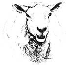

Don't Give Up The Sheep
If you're considering adding some livestock to your homestead, take some of this advice, including selecting a breed, dogs, bloat, breeding, fencing.
By Ron Parker
September/October 1984
If you're considering adding some livestock to your homestead, take a tip from Ron Parker...
Sheep are the ideal useful domesticated animal. They are hardy and healthy. They give both superlative meat and a fiber that has no peer. They are the ideal animal for the homestead, small farm, place in the country, suburban backyard, or any other place where man makes his home and grass will grow.
SELECTING A BREED
When I first thought about writing this ...I told myself that one thing I would leave out was advice on buying sheep, since each buyer's needs are unique. I've since changed my mind because I thought back to when my wife and I bought our first sheep, and decided that we could have used some suggestions, even if we didn't follow them, simply because suggestions get one thinking.
Before buying sheep, consider why you want them at all. Do you want to raise fast-growing lambs for a fat lamb market, or produce specialty wool for handspinners, have a few sheep to trim the lawns and keep brush under control, for pets, for 4-H or FFA projects, or for show stock? If you are sufficiently organized to know what you want, then you are probably familiar with sheep to some extent. Otherwise, start looking at sheep in your area and talk to sheep raisers at fairs and on their farms. Write to the secretaries of the various breed associations for literature that describes the various breeds. Read about different breeds and crossbreeds in magazines and books. You will feel overwhelmed with information at first, but after a bit you'll begin to form your own ideas.
A few suggestions might help you decide on a breed. If you are going to show sheep, or if youngsters in the family want to do so, then you should visit shows and see what classes of sheep are shown in your area. For example, you wouldn't want to raise Lincolns or Cotswolds if there were no long-wooled class at local and state fairs. You wouldn't want black or colored sheep if a whites-only rule prevented them from competing. Talk to the winners and the judges to get their views. You'll find the winners only too eager to sell you some high-priced stock, but keep your wallet in your pocket until you have accumulated some knowledge.
If you want to raise specialty-wool sheep, talk with spinners, weavers, and other fiber artists, and learn how to spin so that you can understand the needs of a handspinner. Also, ask yourself if you are willing to do the marketing of such wools: There are no established channels for selling handspinning fleeces unless you can contract with a shop to take your entire production. Are you prepared to maintain a standard of wool cleanliness that is virtually impossible for the average wool producer but essential to the handspinners' market? Marshall Ham, co-owner and operator of' the St. Peter Woolen Mill in southern Minnesota, described our wool to a producers' association audience as "looking like the sheep lived in the house." They don't, of course, but that's how clean the wool has to be to satisfy a demanding buyer.
Perhaps you just want a few sheep around as pets and decorative lawn mowers. The Cheviot breed was supposedly developed to look attractive on the lawns of the queen's summer castle, Balmoral, in Scotland. You may agree with this royal taste. We have had people buy black sheep from us for pets just because they wanted something a bit unusual. If you don't want to bother with breeding and lambing, you might even consider getting a few attractive wethers to keep around. They usually have good dispositions and make fine pets.
If you are going to try to raise sheep for a profit, then your choice automatically becomes a little more limited. You then want a breed that produces a lamb that is acceptable to lamb buyers and packers so you can command a top market price. You also want a breed that gives lambs that reach market weight quickly on a minimum amount of feed. Not only that, you want a breed that produces plenty of lambs either by having lots of multiple births or by breeding more often than once a year, or both.
Good carcass traits are found in most major breeds, though you may find that your local buyers have strong preferences and prejudices. Some breeds, Finnsheep and Karakul, for example, may not have good carcass conformation. In contrast, Columbias, Hampshires, and Suffolk's are common meat breeds in all parts of the country. Many shepherds select a ewe-type for a given set of traits, and choose a ram of a meat or mutton breed to sire market lambs. For example, our ewe flock is mostly Finn X Lincoln crosses selected for their wool quality for handspinners. We had used a Suffolk ram on them to produce market lambs. This approach had the disadvantage that we could not save replacement ewes from the terminal crosses (because the lambs from the Suffolk ram do not have the breed mixture that is wanted in the ewe flock). We switched largely to Finn X Lincoln and Lincoln rams after we found that the Suffolk-cross lambs grew no better than our wool-type sheep.
DOGS
Herding dogs are almost as much a part of sheep raising as the sheep themselves. A good sheepdog is certainly the greatest labor-saving device I know of, with the possible exception of a corkscrew. One can raise sheep without a dog, but it sure is easier with one. The Border Collie is the classic sheepdog, and I personally would not even bother to try another breed. A Border Collie is born already programmed to herd sheep. All the handler has to do is teach a set of simple commands to control what the dog wants to do instinctively. Teach the pup some simple commands, give it some love, and you've got a sheepdog.
A sheepdog should be used frequently to keep it in good habits, but otherwise it is almost no trouble and is a pleasant companion as well. When left alone, a sheepdog should be confined because some of them will herd the sheep on their own and can cause problems by pushing them into a fence corner or over a cliff, as described in Hardy's Far From The Madding Crowd.
Predatory dogs, whether wild or domestic, mean trouble for a shepherd .... Our place is in a pretty much strictly farming area, but there are a few nonfarmers and others who let dogs roam. A phone call has been sufficient to take care of dogs with known owners, although a load of number-six shot from a distance has a very salutary effect too. For dogs in packs, a loaded rifle is the only reasonable solution.
Check on local laws, and if they are not strong enough, work to get them changed. Dog owners must be made to understand that they are responsible for their dog's actions. Proof is often difficult to establish unless the dog is observed chasing the sheep and then confined until the local law officials and the owner can be called. In our state, according to the laws, a dog in pursuit of farm animals can be shot. Owners almost never believe that their dog would harm anything, and a quick, accurate shot followed by a quiet burial is often the pragmatic solution.
BLOAT
Bloat may occur when sheep are turned into a new pasture, especially alfalfa. Bloat can also be brought on by stressful incidents such as being chased by a dog. I have even seen it happen when a helper unfamiliar to the flock was catching some sheep for me to shear. Most ly, though, it is caused by overeating on fresh, green iced, especially or clover. Gases become trapped in the rumen, usually to a foamy mass; the rumen swells, compressing the lungs; and the sheep may die from suffocation. Prevention is the key in this situation. Sheep turned into a new pasture that contains a lot of alfalfa should first be fed their fill of dry hay to limit their intake and then be allowed only a short time in the new pasture. As little as 15 minutes the first day, 30 the next, and so forth might be appropriate.
Treatment of bloat is difficult, especially if a lot of sheep bloat about the same time, because many will die while you are still treating the first ones. The traditional treatment is to cut a hole in the rumen to let the gases escape; this is called sticking the sheep, and there is a dramatic description of it in Hardy's Far From The Madding Crowd. There is a special tool made for this purpose that puncture, the rumen and then maintains the opening so the gases can get out Cutting a hole with a pocketknife is seldom effective, because the hole doesn't stay open.
A better way to treat bloat if the time is available is to use a three-foot length of half-inch garden hose with the edges smoothed to prevent cuts. The hose can be lubricated and slipped down the sheep's, throat into the rumen, permitting the sheep to swallow it as it goes If the bloat is caused by blockage of the esophagus, the hose will shove the obstruction aside and the gas may escape with some speed through the hose (and the wise shepherd stands to one side). If nothing comes out, suck gently on the free end of the hose to draw a sample of the stomach contents into the hose. Place a thumb over cite free end and withdraw the hose and sample. If there is a sudsy liquid in the hose, frothy bloat is the problem, and bloat treatment liquid is needed. Mix some bloat remedy according to directions on the bottle, reinsert the hose, and pour in an appropriate amount. Before pouring in the remedy you might blow into the hose. If the sheep cough you are in its lung, so try again. The hose can be turned gently to mix in the remedy and help break up the foam. If you have no frothbloat remedy, a few tablespoons of vegetable oil and about a quart of warm water may help. Mineral oil can be used, but it does not have the antifoam properties of vegetable oils.
BREEDING
Breeding time on a sheep farm is almost as much fun as lambing time because things really are happening. The rams start pacing along fences and may get into some head-butting matches as their hormone levels climb with the season. Placed with some ewes, a good ram will rush about sniffing rear ends and curling back his upper lip after the investigation, not unlike a wine lover evaluating the nuances of odor of a fine bottle. He will lift one front leg against the side of ewe he favors and talk to her in throaty, gargling sounds with his tongue hanging out. He will make attempts to mount his favorite and failing that will try another and another. It is really quite a show.
Ewes who are not in heat will act irate and rush away from the ram. Those that are in heat are quite the opposite. They will face the ram, and if there is a crowd of them they all stand around him in a little group. When the ram moves they follow him everywhere. They respond to his attentions with lots of body language and stand solidly for him when he tries to mount them.
Pity the ewes who are in heat when there is no ram around. They stop eating, stand about aimlessly, and stare hopefully in the direction of a distant ram, calling out with loud baas. For lack of a rain to follow, ewes in heat will commonly follow the shepherd (of either sex), a barn cat, or anything else that is handy. A ewe lamb who comes into heat without a ram around can show really strange symptoms.
Some of them will display all of the vocal output of their elders, and they also run wildly around looking this way and that as the unfamiliar-and thus doubly distressing-feelings affect them. Don't panic and call your veterinarian; they'll all recover in a day or two.
Shepherds manage breeding according to their goals and needs. Many commercial sheep raisers just put a bunch of rams in with the ewes and let nature take its course. This method is fine in some ways, but it leaves the shepherd pretty much in the dark as to the parentage of the lambs. It also eliminates any possibility of identifying the characteristics of any individual rams, such as fertility and transmission of genetic traits. I am not saying that this method is no good, but it is not my cup of tea. Since I am curious by nature, I want to know what an individual ram can do rather than what a committee can do.
A difficulty can arise with the use of a group of rams: the problem of the dominant ram. If, in a group, there is one ram that is very aggressive and is constantly trying to exercise his dominance over the others, two problems may surface. First, the dominant ram will repeatedly emphasize his superiority over his colleagues by fighting with them. This results in injury, even death, and all of the participants expend energy on fighting that should be spent on breeding ewes. The situation encourages competition among the rams-not what the sheep breeder wants at all. The breeder wants the ram's entire attention given to the ewes. Many a human female has encountered similar problems with a man who does his dominance sparring with other men in the form of bowling, softball, tennis, or some similar ritual instead of paying attention to her.
Second, the dominant ram may prevent the other rams from mounting any of the ewes in heat. Having done so, the job is left to him, and he has problems. First, having fought all of the other rams, he has expended much more effort than any one of them. He's pooped.
Worse, if he does have enough energy to mount and impregnate all of the ewes he has fought for and won, then he expends a tremendous amount of semen. His sperm supply and fertility may have been fine at the outset of breeding, but because of his servicing every ewe, his sperm count begins to fall, with the result that there are fewer settled ewes and fewer multiple fertilized ova among those that do settle.
If things are this bad, you ask, how do some breeders get away with it? They do if there is not a strongly dominant ram in the bunch. If they are all a group of fairly easygoing characters, they will spend their time with the ewes rather than trying to prove how tough they are. It helps in a ram pool to have all the rams of about the same age and breeding. The more equal they are, the less they will feel obligated to prove themselves. I don't mean to imply that rams stand around thinking all this over and make reasoned decisions as to whether to fight or not. However, a mixed group means mixed personalities. Different breeds of sheep have quite different psyches, as do rams of different ages. A fun-loving young Lincoln is a far cry from a grouchy old Karakul, especially if the Karakul has a shortmale complex.
FENCING
Breeding is a time when your fences will be tested for soundness and effectiveness. A ram with sex on his one-track mind will view a 40-inch fence with scorn and sail over it like a deer as he responds to the siren call of a ewe in heat. Rams who are built for power rather than leaping ability will simply smash through and flatten a woven-wire fence as if it were made of rubber. We had a stubby, ornery, powerful half-Karakul ram who was separated from some ewes by sturdy fence and a two-acre lake. One late summer day he could tolerate no more celibacy, and he just wiped out the woven wire, ran and leapt into the lake, and proceeded to swim clumsily but persistently till he finally reached the ewes. Another ram bred a ewe through a combination woven-and-barbed-wire fence without bothering to jump it. He not only bred her, but also settled her. Never underestimate the inventiveness of a ram in pursuit of a ewe.
|
 |
 |
|
 |
|
|